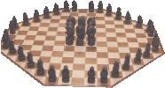

|
ThudSharp Docs ThudSharp Docs
|
|
|
Classic Rules |
|
Copyright 2004/2005 Terry Pratchett,
Trevor Truran and Bernard Pearson A GameThud is unusual in that a game consists of two battles - if you command the dwarfs in the first battle then you'll be in charge of the trolls in the second. At the end of each battle, points are scored by the winning player and the result of the game is decided by combining the results of both battles. So if you have a disastrous first battle, all is not yet lost. In the second battle you may get your revenge with an even more convincing win. 
Pieces starting (From now on the words dwarfs and trolls will include both the pieces themselves and the human player controlling them.) MovesDwarfs have the first move in each battle. A dwarf, being small and fast, can dash around any distance in a straight line (forwards, backwards, sideways and diagonally). As trolls can't see anything directly under their kneecaps, a dwarf can end its move on a square next to a troll without being instantly captured. This may seem a suicidally daft thing to do, but it is often actually a brilliant tactic, since the troll will have to move to capture the dwarf and that may spoil the trolls' other attacking plans. A TROLL lumbers about, moving one square in any direction (forwards, backwards, sideways and diagonally). Since dwarfs are heavily armoured and trolls are solid rock - no piece can pass through a square containing any other piece. Nor can any piece land on, or jump over, the central rock. This rock, by the way, cannot be moved nor does it 'belong' to either player - but it can play a vital part in the battle. CaptureA Troll captures dwarfs by moving next to them and thumping them on the helmet with its club. Captured dwarfs are carted off the battleground with their ears ringing. Dwarfs can only overpower their much bigger enemy by forming a line and hurling the front dwarf straight at a troll and walloping it in the midriff. This causes the troll to lose interest in proceedings and it leaves the arena for a long lie-down until the next battle. Capturing is not compulsory. Captures by the TrollsA troll captures one or more dwarfs by moving to a square next
to it (them). ShovingTrolls can also make captures by forming an unbroken line of
trolls.
Instead of an ordinary move, the front troll is shoved in the back by
the rest in the line, who remain where they are. The shoved troll moves
directly forward as many squares (or fewer) as there were trolls in the
line. Captures by DwarfsA Dwarf captures by having a straight, unbroken, line of dwarfs aimed at a troll and hurling the front dwarf straight ahead to hit the troll. The troll is removed and the dwarf occupies its square. BUT, the attack can only be made if the distance in squares in between the front dwarf and the troll's square is less than the number of dwarfs making up the line. So, for example, 4 dwarfs can attack a troll if there are 0, 1, 2, or 3 empty squares between the front dwarf and the troll. Dwarfs cannot have an ordinary move and capture in the same turn. Just as the trolls cannot shove without making a capture, so the dwarfs can only launch the front chap of a line if he will then make a capture. (Note: 1 lone dwarf can form a line of 1 by moving to a square
adjacent to a troll then hurling himself and capture a troll in this
way. He can't move and capture on the same move, though, but must wait
for his next move assuming the troll hasn't captured him by then.) Remember: shoving and hurling captures can be made in any straight line, including diagonally. End of the BattleWhen the players agree that it is clear that no further captures can be made then the battle is ended. If they cannot agree, the battle continues until agreement is reached. The decision to end a battle or to continue playing is a vital part of the game. Having agreed to end the battle, the points scored by each player is then calculated according to the number of pieces each has left on the board. The Result of the BattleEach Dwarf counts as one point. Each Troll counts as four points. The winning margin is the difference between the players' scores. If the game ends with five dwarfs and two trolls the scores are: Dwarfs 5 - Trolls 8 (2x4) If there were five dwarfs and one troll, the player commanding the dwarfs would win by one. If both players have the same number of points, then the battle is drawn and no points are scored. The result of the first battle is noted and carried forward by that player into the second battle. In this second battle, the players must change roles - the commander of the dwarfs becomes the commander of the trolls and vice versa. The Result of the GameThe player with the higher number of points over the two battles is the winner of the game and the difference in the players' points is the winning margin. If the player who was dwarfs in the first battle won that battle by three points and then lost the second battle (playing trolls) by seven points then that player would lose the game by 7-3 = 4 points. The game can only be a draw if both players end up with the same number of points. The First Few GamesBecause the game relies on the players developing skills at handling two different forces with different moves and methods of capture, it is likely that early games may be one-sided affairs. It will take longer to work out how to successfully manipulate the cunning dwarfs than it does to command simpler and apparently all-powerful trolls. As tactics are developed and battle plans formed, so the games will become closer-fought and take longer and the dwarfs will realize that in Thud there is a battle they can win. Dwarf DevelopmentThe commander of the dwarf army has to be single-mindedly devoted to one aim - the formation of a solid block of dwarfs. He/she will willingly sacrifice dwarfs, or act the coward and run away, to achieve just one outcome from the first part of the game - a BLOCK of dwarfs that can hold off a threat from any direction. This outcome will only be achieved by sacrifice - dwarfs must be cheerfully thrown forward into the path of an advancing troll as a doomed 'forlorn hope' for the greater good of the phalanx that is forming behind. The main advantage possessed by the dwarfs is mobility - dwarfs can dash about and rapidly shift the emphasis from one region of the board to another. Though a line of dwarfs can attack a troll, it is a relatively direct and simple matter to avoid the attack. So trolls are not likely to be beaten by a series of single-line attacks. Without forming a block, dwarfs will be picked off and decimated by their more powerful opponent. For dwarfs, unity is strength. Once that block is formed it can be carefully moved across the board to isolate individual trolls - capturing each in turn for loss of only one dwarf or two will gain points for the dwarf commander. Going ClubbingCommanding the trolls is a much simpler affair. The choices are:
Once the dwarfs have formed a block, it becomes difficult for the trolls to make any more gains, so they need to be as far ahead on points as possible before the dwarfs go on the offensive. For further hints, tips and information about getting your own game set visit our Thudgame Emporium Rules taken from: http://thudgame.com/rules |